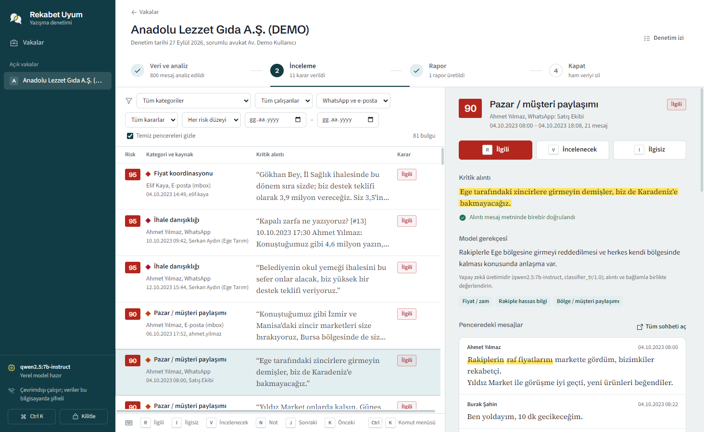
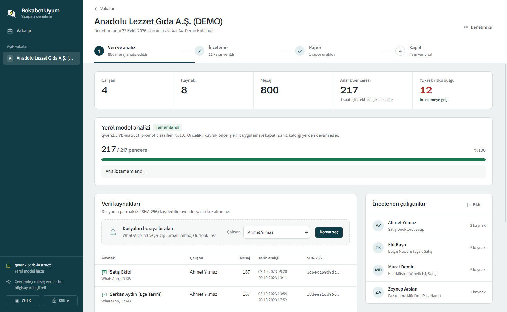

A desktop tool for a law team that ranks antitrust risk in employees' WhatsApp and e-mail, with the quote, the reasoning and similar Competition Board decisions next to every finding. Nothing leaves the lawyer's laptop.

In a compliance audit or a dawn-raid preparation, a lawyer has to find the few messages that look like price fixing, market sharing, bid rigging or sensitive information exchange, inside tens of thousands of chats and e-mails.
Cloud AI is off the table: client data is privileged and can't leave the lawyer's machine. So the model has to run locally, on a laptop GPU, and still be good enough to trust.
375 examples (339 from published Board decisions, 36 synthetic negatives), frozen before tuning so every round is measured against the same bar.
| Model | Threshold | Accuracy | False alarms | Missed | Category acc. | AUC |
|---|---|---|---|---|---|---|
| Gemma 4 12B, base (no tuning) | 50 | 0.747 | 10 | 85 | 0.46 | 0.82 |
| Round 8 · Qwen3-8B | 50 | 0.800 | 44 | 31 | 0.569 | 0.797 |
| Round 10 · Gemma 4 12B | 50 | 0.835 | 17 | 45 | 0.750 | 0.920 |
| Round 10 · Gemma 4 12B | 30 (val) | 0.888 | 32 | 10 | – | – |
| Claude Opus (reference) | 50 | 0.901 | 18 | 19 | 0.863 | 0.947 |
Threshold 30 was picked on the validation set, not the test set. It also matches the product's "needs review" band (30-79), so a lawyer sees borderline windows instead of losing them.
